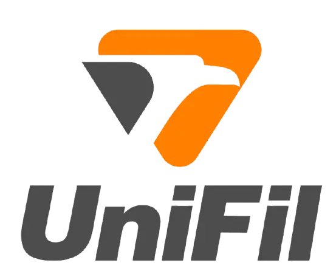
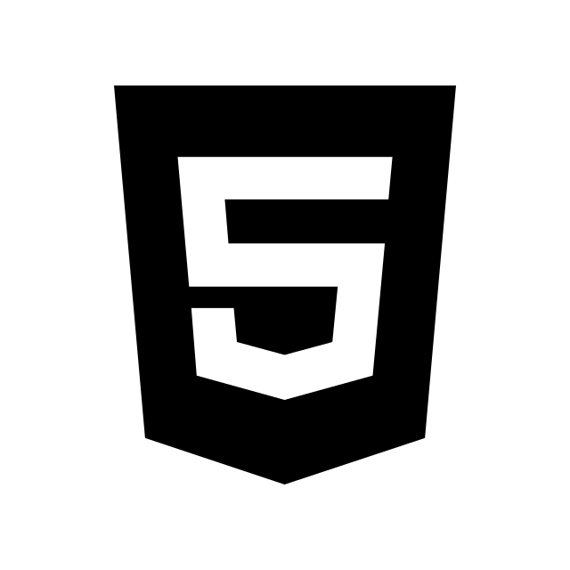
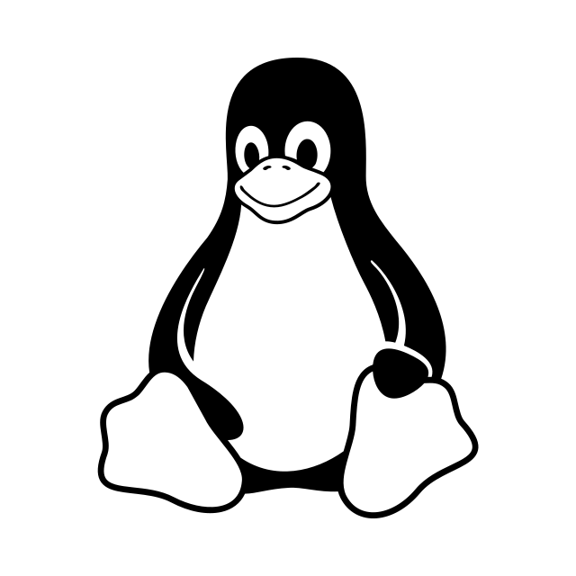

Eduardo Crispim
|
Sobre mim
Olá, meu nome é Eduardo Crispim, sou estudante de Engenharia de Software na UniFil com foco no ecossistema Java, TypeScript e Lua. Entusiasta de ambientes Linux e apaixonado por unir lógica de programação com design digital.
Graduação
Engenharia de Software
Centro Universitário Filadéfila

Ferramentas & Tecnologias





